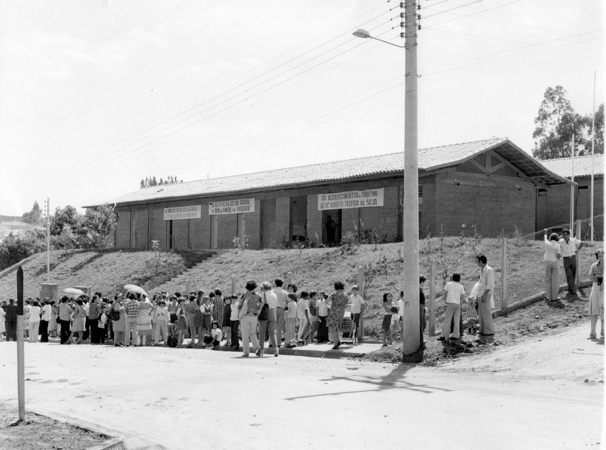
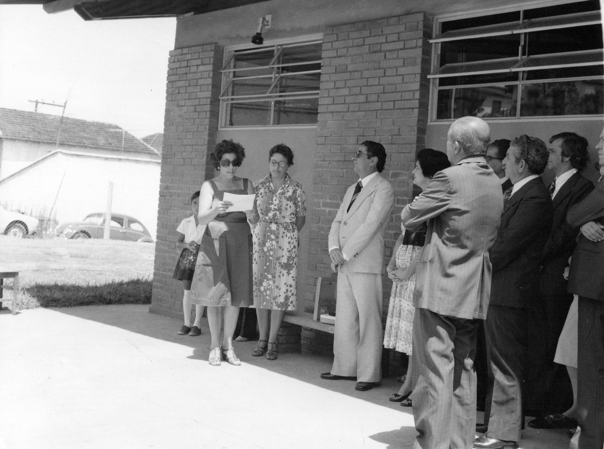
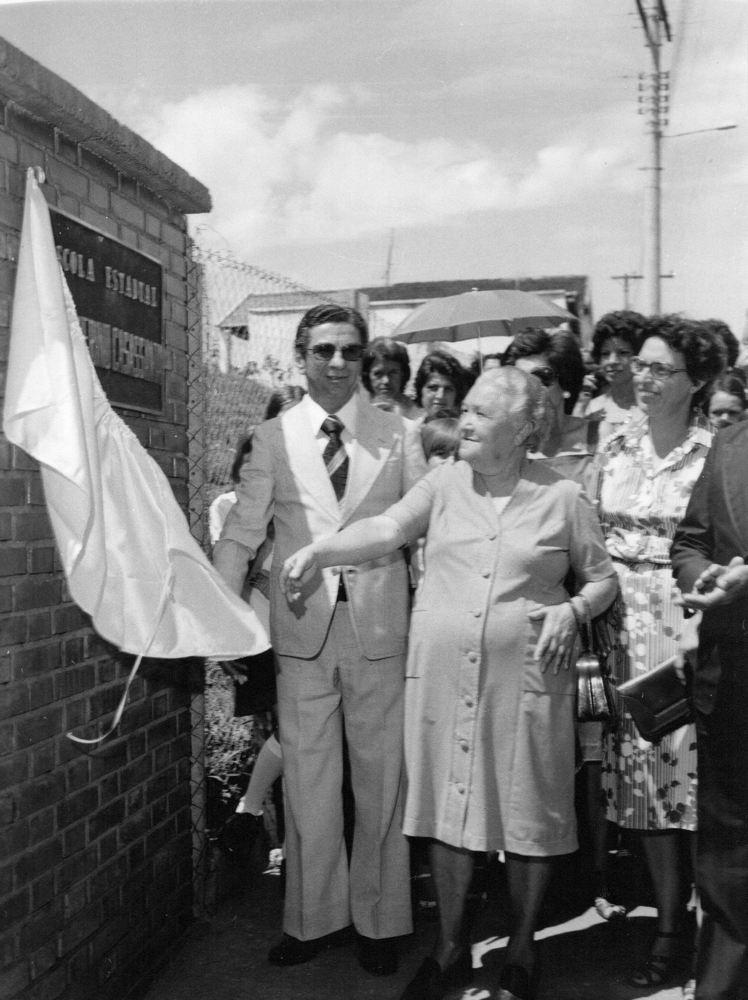
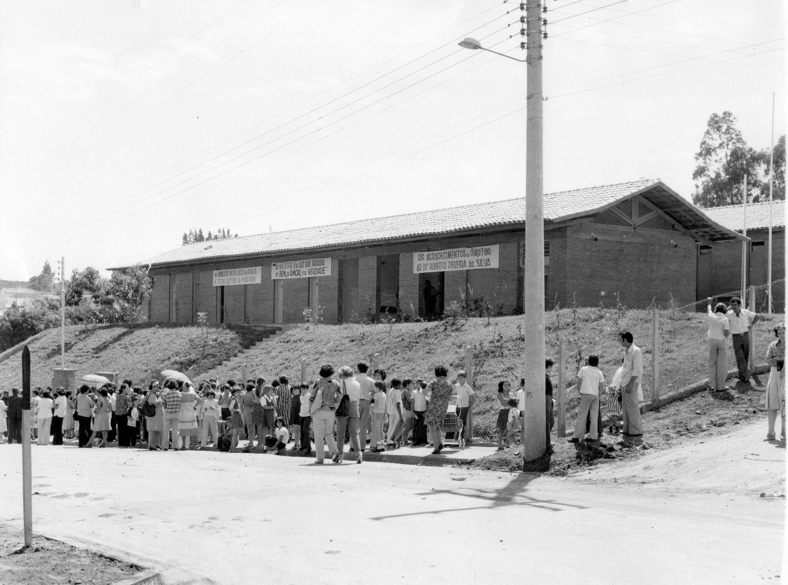
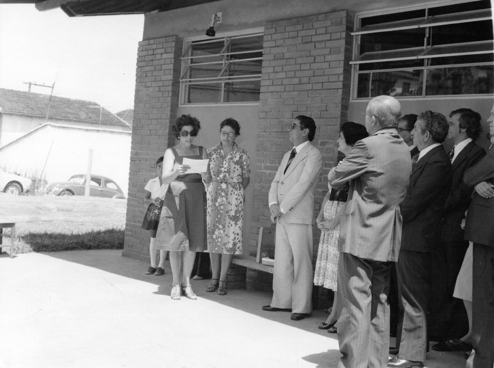
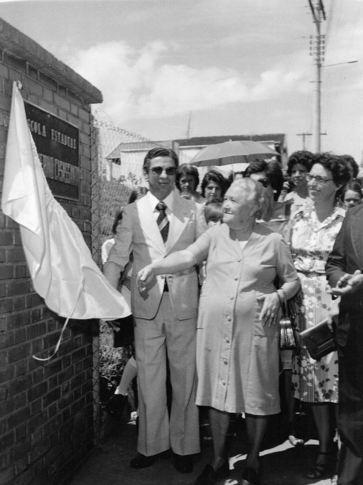

Comemorando um legado, de história e dedicação à educação em Ouro Fino, Minas Gerais
No dia 19 de março, nossa escola celebra 59 anos de conquistas e aprendizado. Venha fazer parte desta história!

No dia 19 de março, nossa escola celebra 59 anos de conquistas e aprendizado. Venha fazer parte desta história!
A Escola Estadual Professor Guerino Casasanta foi criada pelo Decreto nº 6824/62, publicado no jornal *Minas Gerais* em 26 de dezembro de 1962. Foi instalada oficialmente em 19 de março de 1963, mas começou a funcionar somente em 19 de março de 1965.
Primeiramente, funcionou em um dos 500 prédios metálicos pré-fabricados distribuídos pelo Governo de Minas Gerais, conhecidos como "Grupos de Lata". Com o tempo, foi construída uma nova sede, localizada próxima ao Hospital Santa Casa, para oferecer mais conforto à comunidade escolar.
A escola recebeu o nome em homenagem a Guerino Casasanta, um educador e homem público nascido na Itália em 14 de dezembro de 1897. Ele dedicou sua vida ao ensino e à administração pública, ocupando cargos importantes e recebendo a Medalha da Inconfidência.
Desde sua fundação, a escola teve diversas gestões marcantes, contribuindo para o enriquecimento cultural e educacional de Ouro Fino. Atualmente, sob a liderança de Luciana Aparecida da Silva, a instituição continua a fazer história.
 




